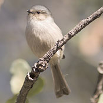

Below are some examples of birds I've sighted in the neigborhood. Please read the descriptions and enjoy the mural at the bottom of the page.
Photo by Pierre Deviche,http://azfo.org/journal/Rosy-facedLovebird2011.html
These are rosy-faced love birds. I have sighted them many times in my yard and througout the neighborhood. They will take full advantage of bird feeders and bird baths if you choose to accomodate them.
Photo by: hummingbirdsbysurprise
This is an Anna's hummingbird. This species lives in our neighborhood year-round.
Derrick Neill, https://www.desertanimals.net/birds/cactuswren/
This is Cactus Wren, our state bird in Arizona. Although it's not an everyday occurence, I do see these birds in our neighborhood sometimes.
Oliver Niehuis, https://askabiologist.asu.edu/activities/bird/bushtit

This is a Bushtit. This is the smallest species of bird I've spotted in our neighborhood.